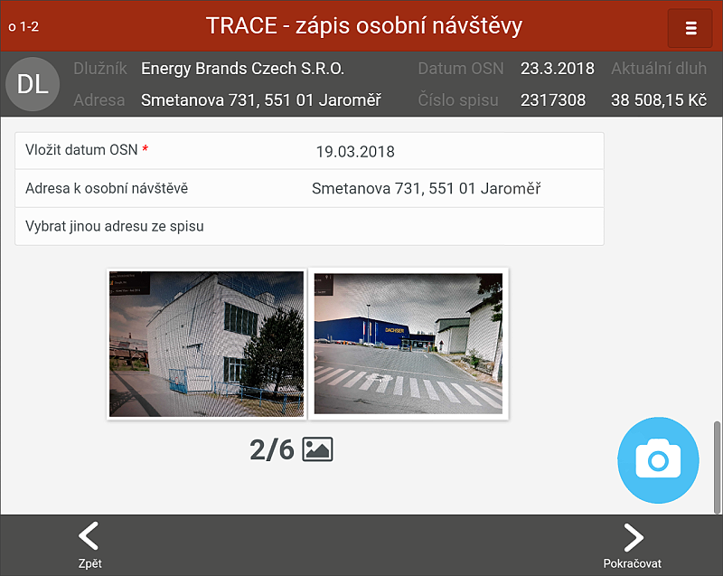

První obrazovka zápisu z OSN
Tato obrazovka se otevře hned po kliknutí na spis. Cílem je ověřit si základní data spisu / dlužníka, vložit datum i adresu a pořídit fotodokumentaci. To vše uživatel najde v jednotlivých částech obrazovky.

Číslo v levém rohu nahoře je identifikace obrazovky, na které se uživatel nachází (zde např. o1-2). V případě problémů je možné takto jednoduše identifikovat obrazovku, kde chyba nastala.